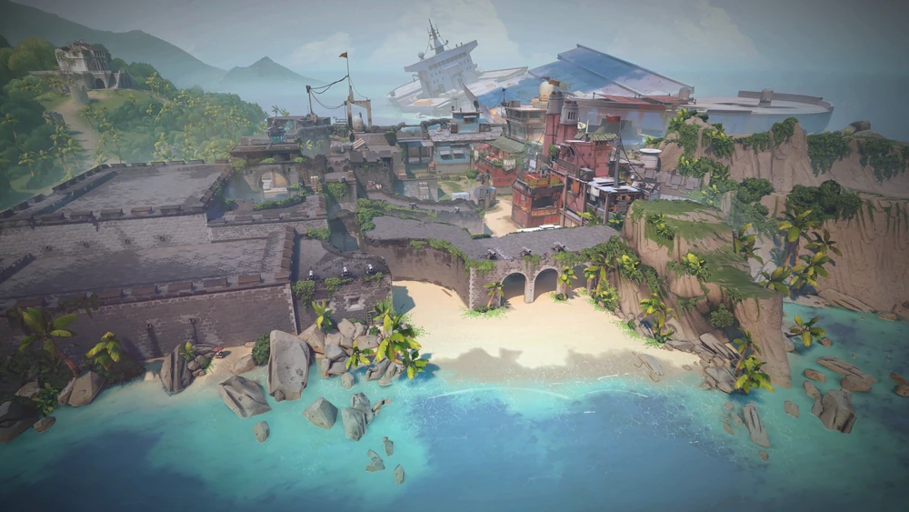

VILLAGE
A serene, monastery-inspired map set in a coastal village.

CLOUDS
A cityscape with open plazas, rustic buildings, and a central rotating skybox.

RUINS
Ancient temple complex surrounded by lush greenery, featuring intricate architecture and rotating doors.

FACTORY
Industrial shipping facility set in the Arctic, with towering cranes and icy terrain.

BEACH
Take in the sights of historic ruins or seaside caves on this tropical paradise.